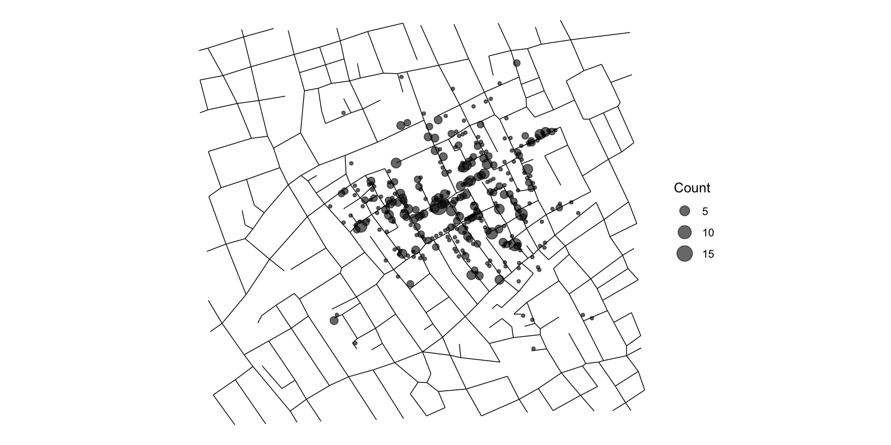
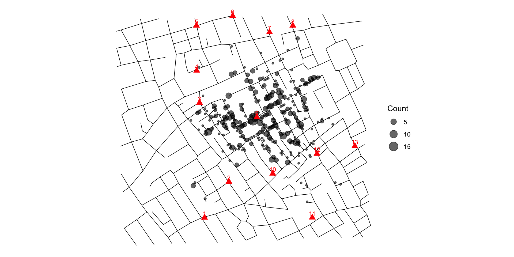
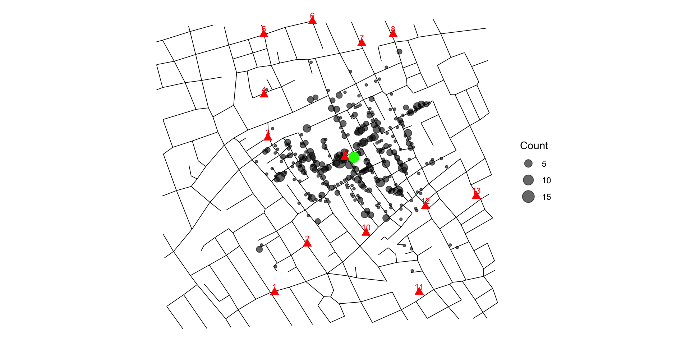
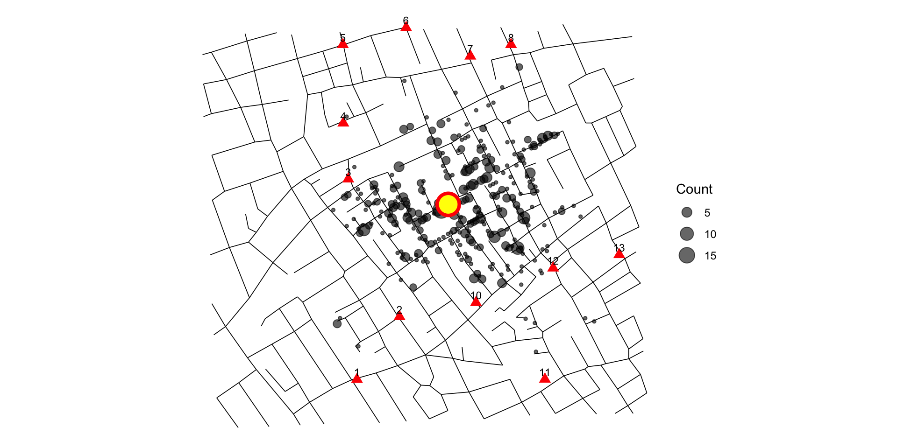
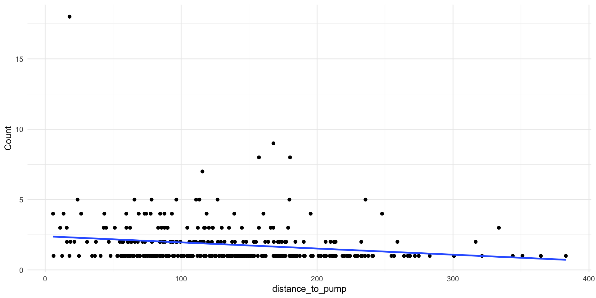

データ分析と問題解決
模擬授業@龍谷大学
この授業の目標
解決したい問題を見つける
「データ分析」を通して問題の原因を探る
解決策を見出す
偉大な先人から学ぶ
19世紀半ばのロンドンでコレラが大流行、多くの死者が出る（社会問題）
コレラが流行する原因は何か？
- 大気汚染？（当時はこちらの考え方が主流）
- 水質汚染？
原因に応じて解決策を見出す
- 大気汚染が原因 -> 街の悪臭を消す対策？（実際に行われた）
- 水質汚染が原因 -> 水質改善？
偉大な先人から学ぶ
John Snow (1813-1858)

Snowが「データ分析」で気づいたこと：
- 水道を供給する会社によってコレラによる死亡率が異なる
- 多くの死者がある特定の井戸を利用
- 井戸近くのビール工場の従業員には重症者なし（水の代わりにビール飲んでる）
-> 原因は水質にあるのでは？
偉大な先人から学ぶ
“コレラマップ”

- ある水道会社から水を引いていた井戸（赤）周辺の死者が多い
- ビール工場（緑）では重症者なし
- この井戸を利用停止にしたら死者数が減少
->水質が原因であると特定
偉大な先人から学ぶ

解決策
- 上下水道の整備
- 水は沸騰させてから飲む
-> コレラによる死者の激減
演習：John Snow の分析の再現
演習の目的など
使うデータ
今回は SnowData パッケージを使います。
SnowData には、次のデータが含まれています。
cholera_cases：コレラの死亡が発生した地点と死者数pump_locations：井戸の位置streets：道路の位置
データを読み込む
データを読み込む
cholera_casesに含まれる変数：
id：観測地点の識別番号Count：コレラ死亡者数Angle：道路に対する角度Easting：x座標Northing：y座標
pump_locationsに含まれる変数：
id：ポンプの識別番号Easting：x座標Northing：y座標
streetsに含まれる変数：
id：道路区間の識別番号dist：道路区間の長さ（メートル）start_point：道路区間の始点の識別番号end_point：道路区間の終点の識別番号start_coord_east：始点のx座標start_coord_north：始点のy座標end_coord_east：終点のx座標end_coord_north：終点のy座標
下準備
死亡地点のデータを確認
観測単位を確認する
井戸のデータを確認する
死亡地点のマッピング
死亡地点のマッピング

道路を追加する
# 空のggplotを作成
ggplot() +
# 道路を線分として描く
geom_segment(
data = streets,
# 座標を指定
aes(
x = start_coord_east,
y = start_coord_north,
xend = end_coord_east,
yend = end_coord_north
),
linewidth = 0.3
) +
# コレラ死亡地点を点で表示
geom_point(
data = cholera_cases,
aes(x = Easting, y = Northing, size = Count),
alpha = 0.6
) +
coord_fixed() +
theme_void()道路を追加する

井戸を追加する
ggplot() +
geom_segment(
data = streets,
aes(
x = start_coord_east,
y = start_coord_north,
xend = end_coord_east,
yend = end_coord_north
),
linewidth = 0.3
) +
geom_point(
data = cholera_cases,
aes(x = Easting, y = Northing, size = Count),
alpha = 0.6
) +
# 井戸の位置を点で表示
geom_point(
data = pump_locations,
aes(x = Easting, y = Northing),
shape = 17,
size = 3,
color = "red"
) +
geom_text(
data = pump_locations,
aes(x = Easting, y = Northing, label = id),
nudge_y = 15,
size = 3,
color = "red"
) +
coord_fixed() +
theme_void()井戸を追加する

疑わしい井戸を選ぶ
疑わしい井戸を選ぶ
中心位置を地図で確認：
ggplot() +
geom_segment(
data = streets,
aes(
x = start_coord_east,
y = start_coord_north,
xend = end_coord_east,
yend = end_coord_north
),
linewidth = 0.3
) +
geom_point(
data = cholera_cases,
aes(x = Easting, y = Northing, size = Count),
alpha = 0.6
) +
geom_point(
data = death_center,
aes(x = Easting, y = Northing),
shape = 16,
size = 5,
color = "green"
) +
geom_point(
data = pump_locations,
aes(x = Easting, y = Northing),
shape = 17,
size = 3,
color = "red"
) +
geom_text(
data = pump_locations,
aes(x = Easting, y = Northing, label = id),
nudge_y = 15,
size = 3,
color = "red"
) +
coord_fixed() +
theme_void()疑わしい井戸を選ぶ

疑わしい井戸を選ぶ
「中心位置」に最も近い「疑わしい井戸」は？
# A tibble: 1 × 4
id Easting Northing distance_to_center
<dbl> <dbl> <dbl> <dbl>
1 9 529396. 181026. 24.4距離変数を作る
「疑わしい井戸」の位置を地図で確認：
ggplot() +
geom_segment(
data = streets,
aes(
x = start_coord_east,
y = start_coord_north,
xend = end_coord_east,
yend = end_coord_north
),
linewidth = 0.3
) +
geom_point(
data = cholera_cases,
aes(x = Easting, y = Northing, size = Count),
alpha = 0.6
) +
geom_point(
data = pump_locations,
aes(x = Easting, y = Northing),
shape = 17,
size = 3,
color = "red"
) +
geom_text(
data = pump_locations,
aes(x = Easting, y = Northing, label = id),
nudge_y = 15,
size = 3
) +
geom_point(
data = suspected_pump,
aes(x = Easting, y = Northing),
shape = 21,
size = 7,
fill = "yellow",
color = "red",
stroke = 2
) +
coord_fixed() +
theme_void()距離変数を作る

距離変数を作る
距離変数を作る
# A tibble: 6 × 6
id Count Angle Easting Northing distance_to_pump
<dbl> <dbl> <dbl> <dbl> <dbl> <dbl>
1 1 1 311 529161. 181015. 235.
2 2 1 311 529188. 180982. 212.
3 3 2 216 529190. 181046. 206.
4 4 2 216 529184. 181041. 212.
5 5 1 126 529211. 181038. 185.
6 6 1 126 529227. 181015. 169.距離と死亡者数の関係を見る
距離と死亡者数の関係を見る

回帰モデル
次のような回帰モデルを考えます。
\[ Count_i = \alpha + \beta Distance_i + u_i \]
もし \[\beta < 0\] であれば、疑わしい井戸から遠い地点ほど、死亡者数が少ないという関係を表します。
回帰分析
回帰分析
Call:
lm(formula = Count ~ distance_to_pump, data = cholera_cases2)
Residuals:
Min 1Q Median 3Q Max
-1.3683 -0.8224 -0.4621 0.2764 15.6830
Coefficients:
Estimate Std. Error t value Pr(>|t|)
(Intercept) 2.395371 0.189118 12.666 < 2e-16 ***
distance_to_pump -0.004365 0.001253 -3.483 0.000566 ***
---
Signif. codes: 0 '***' 0.001 '**' 0.01 '*' 0.05 '.' 0.1 ' ' 1
Residual standard error: 1.519 on 315 degrees of freedom
Multiple R-squared: 0.03708, Adjusted R-squared: 0.03402
F-statistic: 12.13 on 1 and 315 DF, p-value: 0.0005662ここで考えるべきこと
では、この回帰結果から、
この井戸の水がコレラを引き起こした
と結論づけられるでしょうか。
答えは、そう簡単ではありません。
この分析の限界
このデータで観察しているのは、 少なくとも1人の死亡者が出た地点です。
したがって、この回帰は、
井戸に近い人ほど死亡しやすい
ことを直接示しているわけではありません。
さらに必要なデータ
より厳密に考えるには、次のような情報が必要です。
- 各地点に住んでいた人数
- 死亡しなかった人の情報
- 各世帯が実際に使っていた井戸
- 所得や衛生環境
- 直線距離ではなく、実際の移動距離
因果関係を考える
回帰分析の結果は、関係を数値で表すうえで有用です。
しかし、
関係があること
と
原因であること
は同じではありません。
この違いを意識することが、データ分析では重要です。
学生に出す演習問題：基礎
cholera_casesの観測地点数を確認しなさい。- 死亡者数の合計を求めなさい。
- 死亡地点を散布図で表しなさい。
- 井戸の位置を地図に追加しなさい。
学生に出す演習問題：応用
- 地図から、感染源として疑われる井戸を1つ選びなさい。
- その井戸から各死亡地点までの距離を計算しなさい。
- 距離と死亡者数の関係を散布図で確認しなさい。
lm()を使って、距離と死亡者数の関係を推定しなさい。
学生に出す演習問題：考察
- 回帰係数を自分の言葉で解釈しなさい。
- この分析から言えることと言えないことを整理しなさい。
- 因果関係を明らかにするには、どのような追加データが必要でしょうか。
- 今回の分析を、現代の感染症対策に応用するとしたら、どのようなデータが必要でしょうか。
この演習で身につける力
この演習では、Rで地図を作るだけではありません。
- データの観測単位を確認する
- 可視化によって仮説を立てる
- 分析に必要な変数を作る
- 回帰分析で関係を数値化する
- 結果の限界を考える
授業全体への接続
この授業では、今後も同じ流れで演習を行います。
- 実社会の問いから出発する
- データを確認する
- Rで可視化・分析する
- 結果を解釈する
- 何が言えるか／言えないかを考える
後半では、この流れを回帰分析や因果推論の考え方へとつなげます。
まとめ
ジョン・スノウのコレラマップは、 データ分析の基本的な流れを学ぶための優れた題材です。
データを見る
可視化する
仮説を立てる
変数を作る
分析する
限界を考える
この型を、授業全体を通じて繰り返し練習していきます。